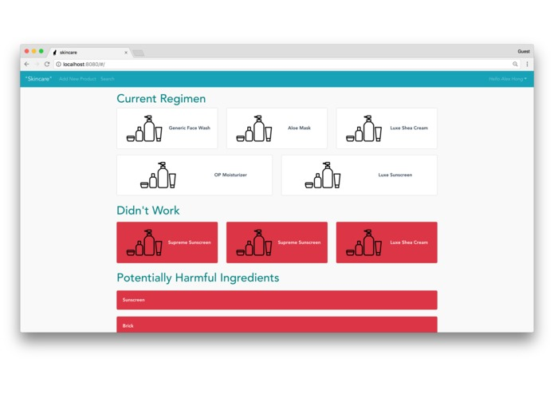
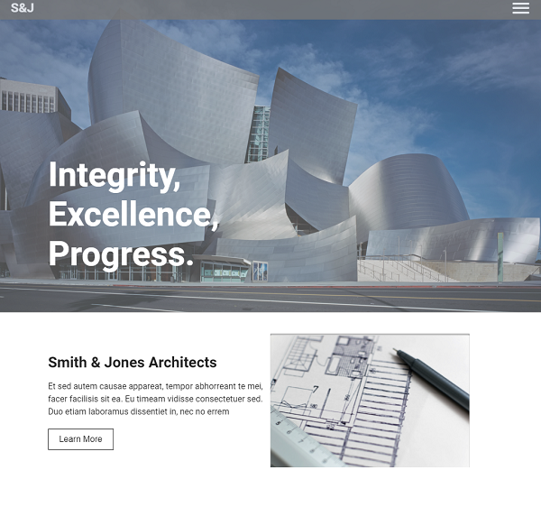
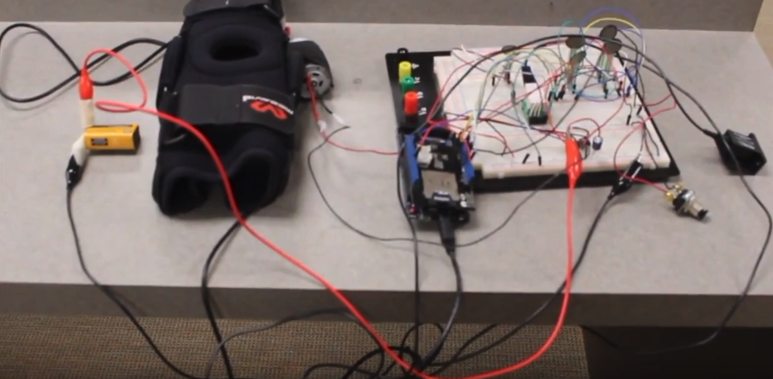

About
Hey, everyone! I go by Jun, since even I find it difficult to pronounce Hyuk sometimes.
I am a full-stack developer, with a strong passion for building web applications. I am a problem solver that loves all types of challenges.
I graduated from the University of Southern California with a Bachelor's degree in Biomedical Engineering. While I love the healthcare industry, my passion for software development has motivated me to chase my dream of building web applications!
Skills
Many like to represent their skillset by presenting a percentage to represent proficiency. I find it difficult to gauge a percentage for proficiency, especially with how endless the learning journey is! So instead of a percentage, here are some of the technologies that I am comfortable and confident with.
| Front-End |
Back-End |
| HTML + CSS |
Node + Express |
| Less + Sass |
SQL |
| React |
NoSQL |
| Redux |
RESTful APIs |
| Apollo Client |
GraphQL |
Please note that this list is not exhaustive. I am always learning new technologies! Please take a look at my resume for a more comprehensive list.
Projects
"Skincare"

It's frustrating when our skin is not how we want it to be. "Skincare" is a web application that was made to pinpoint which ingredients in skincare products may cause you to break out. We used Vue.js, Express.js + Node.js, and Google Cloud Datastore.
Company Site

A sample company site coded from scratch, using HTML5, CSS3 (LESS), and Vanilla Javascript. The site includes a fully functional tab component and a fully functional fade carousel, both coded from scratch utilizing Javascript components + DOM manipulation.
Ski Saver

ACL tears are the most common injuries among skiiers. Ski Saver is a device that determines whether a skier will undergo an ACL tear, utilizing inputs from an accelerometer and force sensors. Once Ski Saver determines that the skier will undergo an injury, a motor tightens the knee brace, which allows for protection of the ACL and the knee. Ski Saver was created using an Arduino Due (hardware) and integrated with LabVIEW (software).
Electric Guitar

A fun project where we started off at the woodshop to carve the wood for the guitar. We designed a linear circuit board with amplifiers and filters to read frequencies from the guitar to output sound.
Contact
Feel free to contact me about anything! I'd love to hear from you, whether it's about web development, cryptocurrency, food, fashion, you name it!